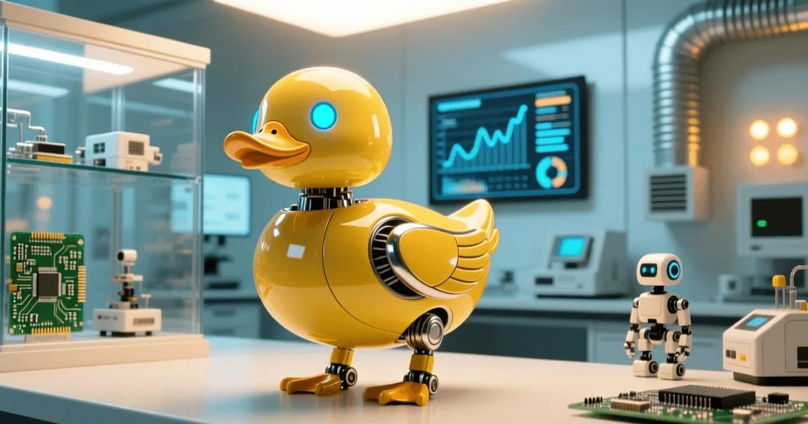

China's Educational Robot Makers
The consumer-robot lane Microduck is opening up.
Hugging Face's Microduck took $2.6M in preorders within 24 hours — one duck sold every four seconds. The hype story is open-source AI; the quiet story is Chinese manufacturing: the duck is assembled by Seeed Studio in Shenzhen, its brain is a Rockchip RK3566, and its main board comes from Radxa.

On August 27, 2026, Hugging Face opened preorders for Microduck — a 25cm-tall, 800-gram, $399 biped robot shaped like a duck. Six hours later orders passed $1M; within 24 hours they reached $2.6M, about 6,500 units at a peak rate of one duck every four seconds. Hugging Face's checkout page put up a red banner: "The community ordered a lot of ducks." New orders now ship in 4-6 months. The story everyone told was open-source AI. The story that matters for this site is simpler: the duck is made in Shenzhen.
Microduck is the second consumer robot from Pollen Robotics, the French startup Hugging Face acquired in April 2025 (after Reachy Mini, the $499 desktop arm). It packs a camera in its eye, a microphone and speaker, Wi-Fi and Bluetooth, two IMUs and a small lidar, driven by 15 Dynamixel XL330 servomotors. Its beak can grip objects up to 800g. The hook is the software: the SDK, simulation environment and training code are fully open source, built on Hugging Face's LeRobot stack. Developers train skills in the MuJoCo simulator — Hugging Face demoed walking learned in about two hours across 4,000 parallel GPU environments — then deploy them to the physical duck. It can stand up after falling, walk, roller-skate and perform scripted gymnastics. The full reinforcement-learning stack in a $399 toy is the "democratization of physical AI" in one sentence.
| Component | Final assembly | Main control chip | Main board | Servomotors |
|---|---|---|---|---|
| Supplier | Seeed Studio (矽递科技) | Rockchip RK3566 | Radxa | ROBOTIS (KR) |
| Where | Shenzhen | Shanghai-listed (603893) | Shenzhen | South Korea |
| Role | Full production, also made Reachy Mini | ARM-based on-device AI | Carrier board for RK3566 | 15× XL330 joint servos |
Seeed Studio (矽递科技), a veteran Shenzhen open-hardware firm, is the contract manufacturer for the entire Microduck — and previously built Hugging Face's Reachy Mini. Seeed's edge is agile manufacturing: it can take an open-hardware design from prototype to mass production in weeks, the exact capability a fast-moving AI company needs. For China's robotics ecosystem, this is the pattern repeating: an overseas brand with a hot product, a Shenzhen maker with the manufacturing muscle to ship it to the world.
Microduck's on-device compute is a Rockchip RK3566, a quad-core ARM processor from Shanghai-listed Rockchip (603893.SH). The chip runs the duck's perception and inference on board; Radxa, another Shenzhen company, supplies the RK3566 carrier board. Chinese observers read this as the definitive case of "Chinese manufacturing riding the embodied-AI wave": a globally hyped robot with a Chinese chip, a Chinese board and a Chinese assembly line — sold by a French-American AI company.
The Microduck story is a preview. As Hugging Face pushes "affordable open-source robots" (and its pending $12.9B acquisition by Nvidia hovers in the background), the physical-AI hardware wave will increasingly be built on Chinese chips, Chinese boards and Chinese assembly — exactly the supply chain this site tracks.
Microduck is designed by Pollen Robotics, the French startup Hugging Face acquired in April 2025, and manufactured in China by Seeed Studio (矽递科技) in Shenzhen — the same contract manufacturer behind Hugging Face's Reachy Mini.
The Microduck runs on a Rockchip RK3566 processor (Shanghai-listed Rockchip, 603893.SH), built on ARM architecture. The main control board comes from Radxa, another Shenzhen company.
The Microduck sells for $399 (~RMB 2,681). Preorders hit $2.6M in the first 24 hours — about 6,500 units at a peak of one duck every four seconds.
It is the first full reinforcement-learning stack in a $399 consumer robot: SDK, simulation and training code are all open source, letting developers train skills in MuJoCo and deploy them to the robot. It is widely read as the democratization of physical AI.
The consumer-robot lane Microduck is opening up.
The joints inside every walking robot, at scale.
Consumer quadruped robots — the duck's four-legged cousins.
The sensing stack on Microduck-class robots.
Company profiles, product pages and supplier analysis for China's robotics ecosystem.